warrior
hero. Figure warrior on heroes.jpg at 24,158,268,412. Silhouette 2615 pixels. Night 42.87, dusk 49.22, day 99.74.
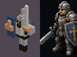
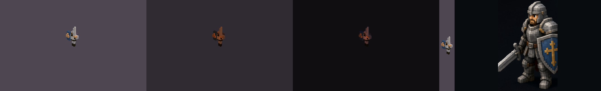
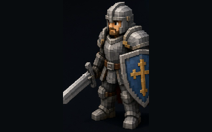
npm run models wrote these frames at game zoom through the pixel path. Heroes and monsters also have a close-up, about 80px tall, and the portrait card is that close-up. The pictures on this page are the goldens in test/gallery/. CI uploads the same bytes as artifacts/gallery/. A second run has to match. The concept sheets are heroes.jpg (present), monsters.jpg (present), theme.jpg (present). Do not invent a substitute sheet.
The sheet is the dusk town: violet sky, dark pines, warm windows. The day swatch is the lit clearing graded to the moss at 150,192 (hue 87.1, luminance 121.9). The dusk swatch is the far field (hue 291.4). The pool swatch is the ground by the brazier (hue 20.5).
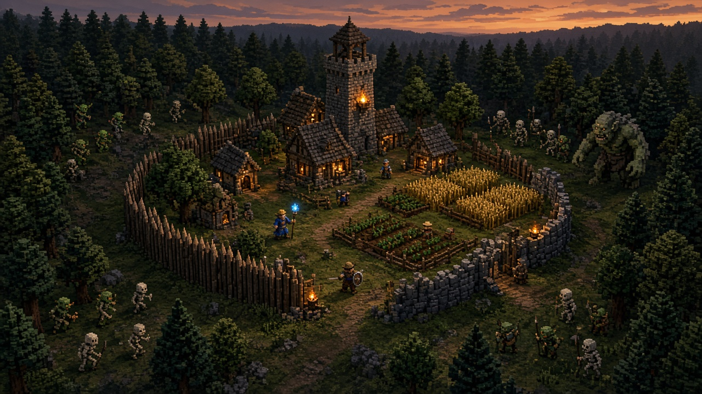
hero. Figure warrior on heroes.jpg at 24,158,268,412. Silhouette 2615 pixels. Night 42.87, dusk 49.22, day 99.74.



hero. Figure mage on heroes.jpg at 312,124,196,448. Silhouette 2216 pixels. Night 32.2, dusk 36.39, day 74.64.
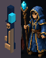
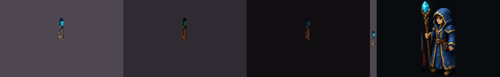
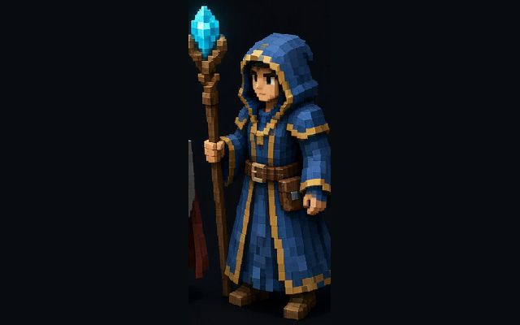
hero. Figure scout on heroes.jpg at 524,100,216,480. Silhouette 2593 pixels. Night 31, dusk 33.84, day 66.29.
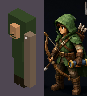
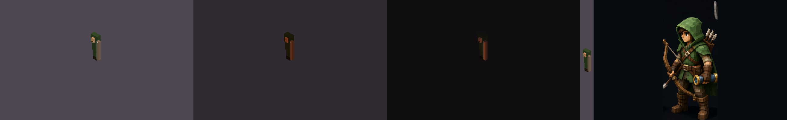
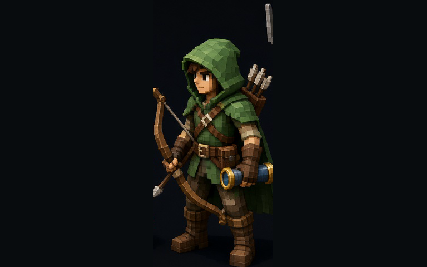
hero. Figure farmer on heroes.jpg at 752,98,250,480. Silhouette 2589 pixels. Night 40.01, dusk 50.05, day 106.65.
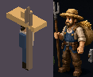
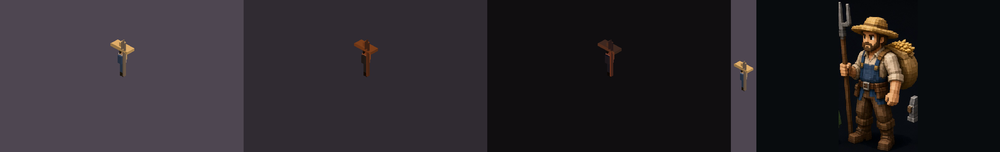
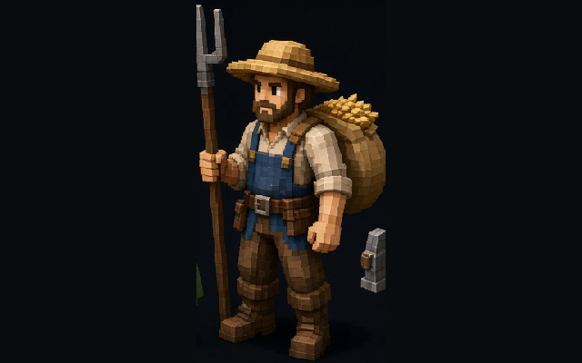
hero. Figure engineer on heroes.jpg at 1016,158,224,432. Silhouette 2471 pixels. Night 29.66, dusk 37.36, day 78.81.
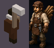
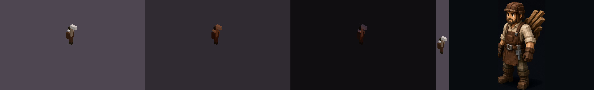
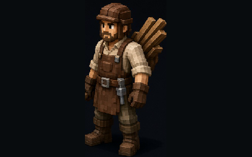
monster. Figure goblin on monsters.jpg at 16,328,236,246. Silhouette 1044 pixels. Night 45.95, dusk 51.1, day 94.97.
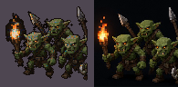
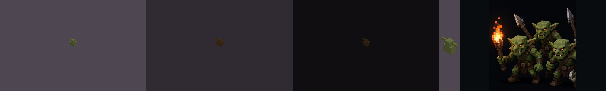
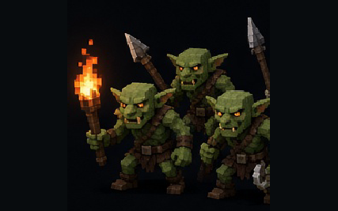
monster. Figure skeleton on monsters.jpg at 260,328,260,246. Silhouette 1044 pixels. Night 51.43, dusk 58.6, day 114.2.
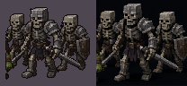
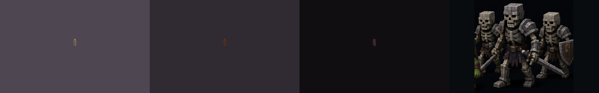
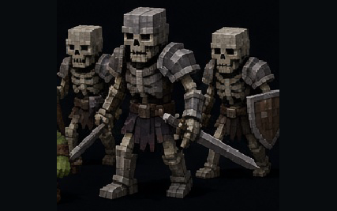
monster. Figure wolf on monsters.jpg at 760,340,270,245. Silhouette 536 pixels. Night 30.76, dusk 37.77, day 75.02.
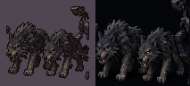
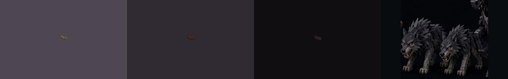
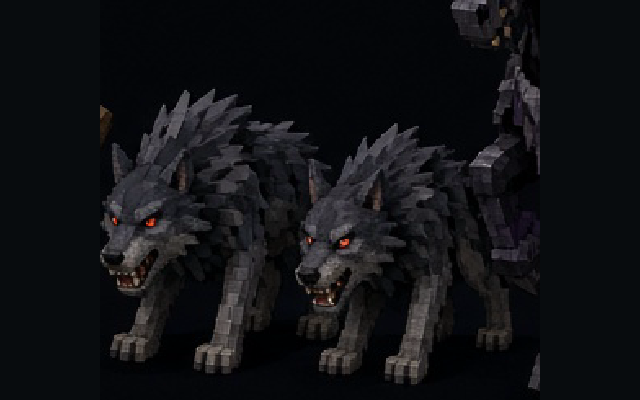
monster. Figure ogre on monsters.jpg at 524,292,226,286. Silhouette 2341 pixels. Night 34.57, dusk 40.84, day 83.02.
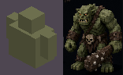
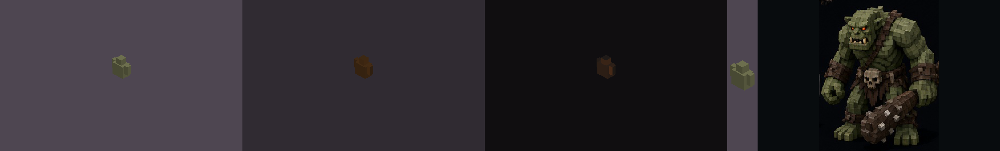
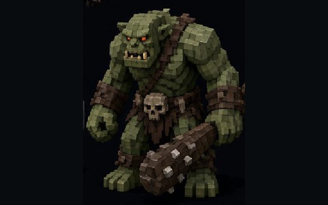
monster. Figure bat on monsters.jpg at 408,68,260,96. Silhouette 434 pixels. Night 37.65, dusk 49.22, day 97.33.
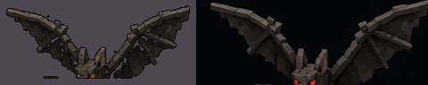
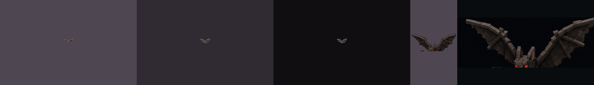
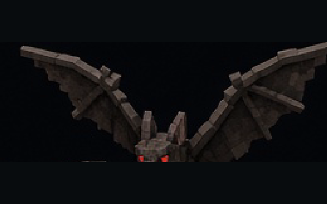
monster. Figure dark rider on monsters.jpg at 1000,70,275,520. Silhouette 6123 pixels. Night 26.93, dusk 32.43, day 67.91.
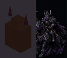
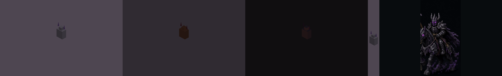
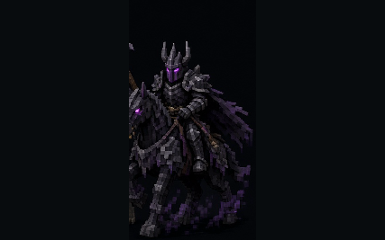
building. Figure palisade on theme.jpg at 160,280,250,220. Silhouette 1764 pixels. Night 33.74, dusk 39, day 71.6.
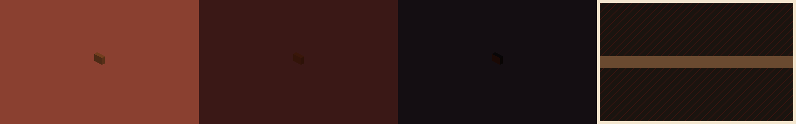
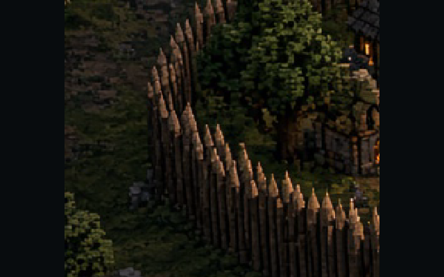
building. Figure stone tower on theme.jpg at 590,36,120,130. Silhouette 1285 pixels. Night 25.78, dusk 29.03, day 52.02.
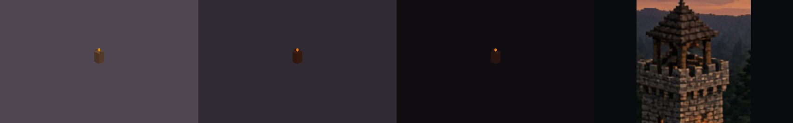
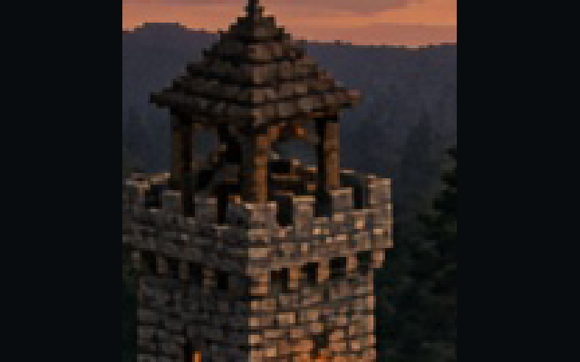
building. Figure ground torch on theme.jpg at 520,490,100,90. Silhouette 600 pixels. Night 21.01, dusk 28.76, day 59.48.
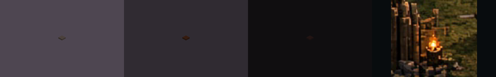
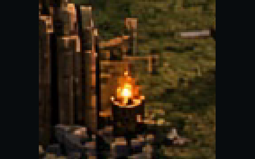
building. Figure wheat on theme.jpg at 740,300,250,140. Silhouette 718 pixels. Night 23.24, dusk 32.63, day 65.79.
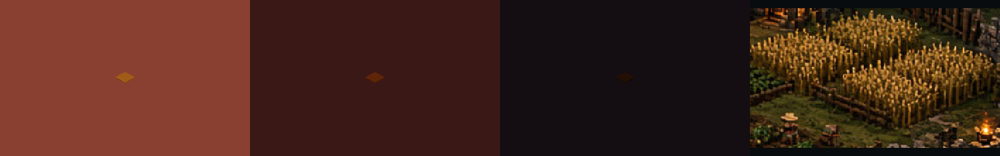
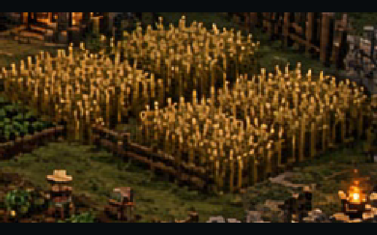
building. Figure lit house on theme.jpg at 500,190,200,150. Silhouette 1160 pixels. Night 25.23, dusk 29.5, day 53.65.
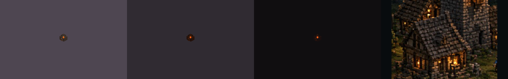
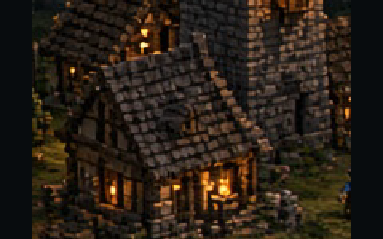
building. Figure spell light on theme.jpg at 470,330,160,140. Silhouette 1190 pixels. Night 31.34, dusk 35.79, day 77.05.
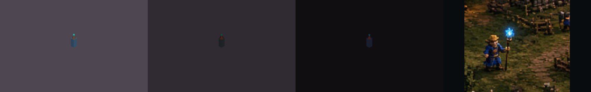
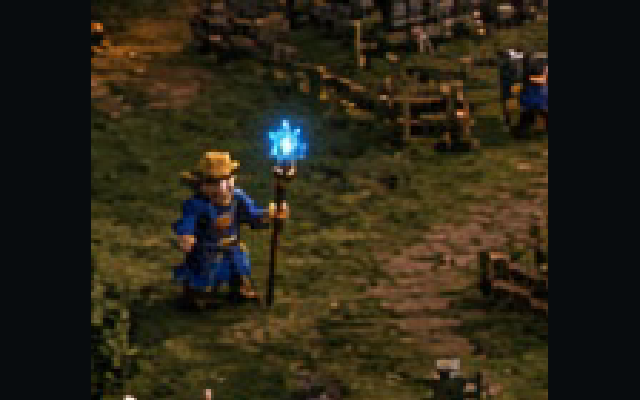
prop. Figure keep on theme.jpg at 548,28,188,230. Silhouette 14896 pixels. Night 20.48, dusk 26.49, day 54.96.
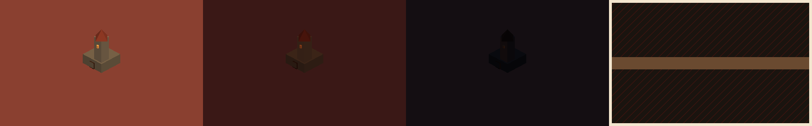
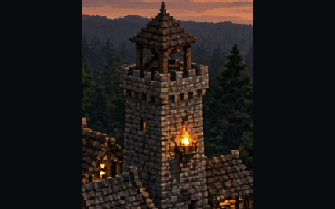
prop. Figure pine on theme.jpg at 0,500,180,210. Silhouette 853 pixels. Night 22.13, dusk 27.43, day 53.92.
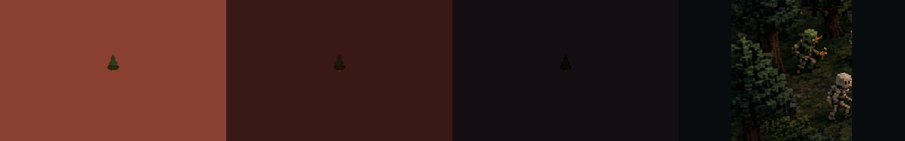
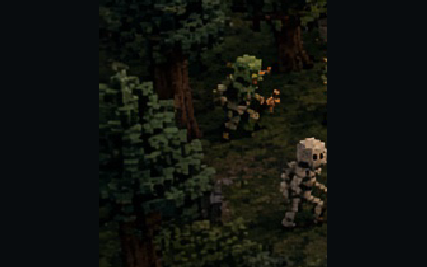
prop. Figure pine trunk on theme.jpg at 1080,160,180,260. Silhouette 276 pixels. Night 21.64, dusk 25.88, day 50.21.